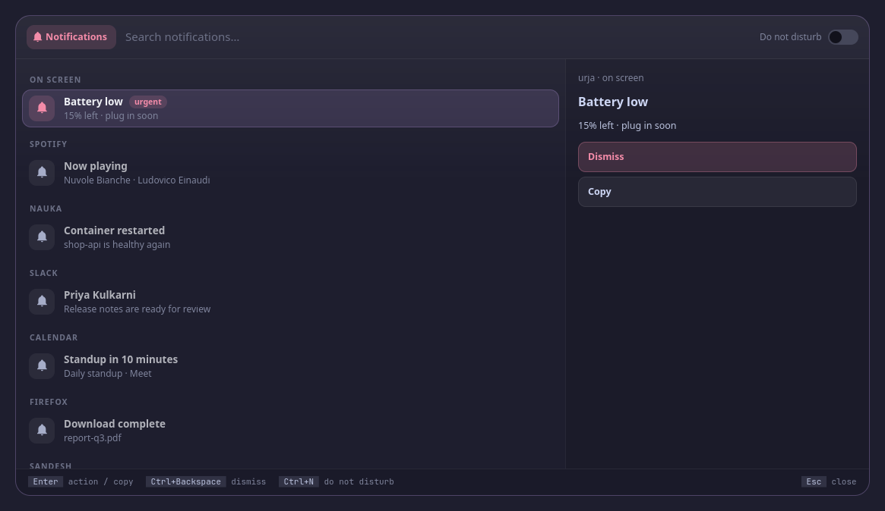
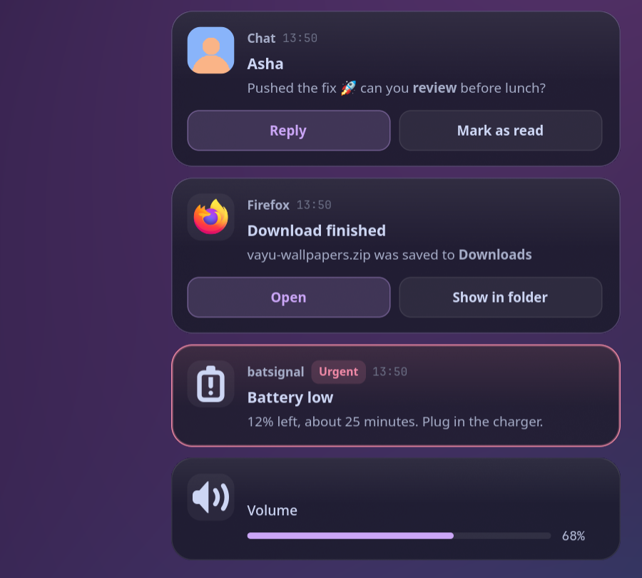

Screenshots use made-up demo notifications.
Akashvani (आकाशवाणी) is Sanskrit for "voice from the sky": the notices your apps send you.
akashvani is the notification system for Vyom desktops. It is the notification server (it replaces mako or dunst): apps send it notifications over the standard freedesktop D-Bus interface, and it draws them as glass cards in your theme's colours, keeps a history with times, holds them during do not disturb, and gives you one keyboard-driven panel for everything. It runs inside the Vyom daemon that's already resident, so it adds no process of its own. It runs on any compositor with the layer-shell protocol (sway, Hyprland, river, niri, Wayfire, labwc…). In Vayu, the desktop it was built for, it replaced mako.
apps (Firefox, Slack, notify-send, scripts)
│ org.freedesktop.Notifications (D-Bus, the freedesktop spec)
▼
╭─ Vyom daemon (one resident GTK 4 process) ──────────────────────────╮
│ akashvani server ── rules ── modes (do not disturb, silent) │
│ │ │ │
│ │ ╰── history (with times, saved) ──╮ │
│ ▼ ▼ │
│ popups (layer-shell, glass cards) the panel (vyom akashvani) │
╰──────────────▲──────────────────────────────────────────────────────╯
│ dev.vayu.Akashvani (D-Bus)
`akashvani` command (scripts, bars, keys)#Features
The popups
- Glass cards in your theme: rounded, blurred where the compositor blurs (SwayFX), in the colours of your theme (Vyom's
@base,@accent,@red…), so a theme change restyles them too. - What it means, at a glance: urgent ones get a red frame and an Urgent chip, low ones stay quiet; a rule can tint an app's cards.
- The notification's image (a contact's photo, a screenshot) or its icon, the app and the time, the title, the body with its bold, italics and links made safe.
- Actions are buttons on the card; a click runs the default action, right click dismisses, middle click dismisses all.
- A bar for a value: volume and brightness keys (and downloads) show one card that moves in place, never a pile, and stay out of the history.
- Hover holds a card on screen; it slides in and out; more than
max_visiblewait behind a "+N more" pill (an urgent one never waits). - Every part has a CSS class, so you can restyle any of it (Styling).
The server
- The freedesktop notification spec (1.2): replacing a notification, actions, images, urgency, categories, sounds, resident and transient ones.
- Rules per app, title, urgency, category or mode: how long it stays, hide it, mute it, keep it out of the history, tint it (Rules).
- Modes:
dnd/do-not-disturbhold popups (urgent ones still show) and mute sounds,silentonly mutes; they survive a restart, and a timed do not disturb turns itself off. - A history with times, saved across restarts (200 by default).
- The
akashvanicommand, with makoctl's commands and JSON, so scripts and bars written for mako keep working (The command). - Light: no process of its own (it lives in the resident Vyom daemon), one window for every popup, hidden when there are none.
The panel (vyom akashvani)
- What's on screen now, urgent ones first, held ones marked, with the actions each offers.
- The history with each app's notifications stacked into one row with a count (Enter opens the stack), under Earlier today, Yesterday and Older, with a time on every row.
- The preview shows the whole message and its actions as buttons, numbered
Alt+1..9, with Copy and a red Dismiss. - Do not disturb for an hour, till tomorrow morning, or till you turn it off, in the header; the panel says how many notifications it's holding.
- Keyboard first: every action has a key, shown in the footer; the mouse works too.
#Install
#Requirements
- Vyom 0.7.0 or newer (Python 3.11+, PyGObject, GTK 4, gtk4-layer-shell, a Nerd Font)
- Optional:
pw-play(PipeWire),paplayoraplayfor a sound
#Install
git clone https://github.com/Theyashsawarkar/akashvani ~/.local/share/vyom/plugins/akashvani
ln -s ~/.local/share/vyom/plugins/akashvani/bin/akashvani ~/.local/bin/akashvani # the command
vyom reload # pick it up (or log out and in)
vyom akashvani # open the panel; run it again to closeWith kosha: kosha install akashvani does all of it.
Make it your notification server. Only one program can be, so stop the old one (mako, dunst, swaync) and remove it from your compositor's startup:
systemctl --user disable --now mako.service # or: pkill mako; pkill dunst
akashvani doctor # ✓ akashvani serves notificationsakashvani waits in line while another daemon holds the name and takes over the moment it exits; until then the panel reads mako through makoctl, as before.
Start it on the first notification. If an app sends a notification before Vyom has started, D-Bus starts whichever daemon claims the name, which may be mako. This file makes it start Vyom instead:
mkdir -p ~/.local/share/dbus-1/services
cp ~/.local/share/vyom/plugins/akashvani/dbus/org.freedesktop.Notifications.service ~/.local/share/dbus-1/services/Give the panel a key in your compositor, e.g. sway:
bindsym $mod+<key> exec vyom akashvani#Update and uninstall
git -C ~/.local/share/vyom/plugins/akashvani pull && vyom reload # update
rm -rf ~/.local/share/vyom/plugins/akashvani && vyom reload # uninstall (start mako again)#Usage
Open it with vyom akashvani (or your key). It opens in normal mode, so stray typing changes nothing: every key is a command and Space is the leader (a strip shows what comes next); / searches. The footer always shows the keys for what's selected.
Vyom's keys work too (every vim tool has them): ? and Space ? list every key, Space Space is the palette, j / k move, gg / G jump, / searches again, H / L switch tabs, q closes, Space u f is fullscreen, Esc steps back.
Normal mode (akashvani opens in it)
| Key | Action |
|---|---|
Enter | Run the notification's default action (or open an app's stack, or copy it) |
h | Fold the app's stack |
l | Open the app's stack |
d d | Dismiss the on-screen notification (it stays in the history) |
u | Bring back the last dismissed notification |
y y | Copy the notification's text |
Both modes
| Key | Action |
|---|---|
Alt+1..9 | Run that numbered action of the notification |
Ctrl+N | Cycle do not disturb (off, 1 hour, till tomorrow, till you turn it off) |
Leader (Space)
| Key | Action |
|---|---|
Space x 1..9 | Run that numbered action of the notification |
Space n n | Cycle do not disturb (off, 1 hour, till tomorrow, till you turn it off) |
Space n o | Turn do not disturb off |
Space n h | Turn do not disturb on for an hour |
Space n t | Turn do not disturb on till tomorrow morning |
Space n a | Turn do not disturb on till you turn it off |
Space d d | Dismiss the on-screen notification |
Space d a | Dismiss every notification on screen (asks first) |
Space f l | Show only what's on screen now |
Space f h | Show only the history |
Space f a | Show only the selected notification's app |
Space f c | Clear the filter (show everything) |
Space y y | Copy the notification's text |
Space y b | Copy the notification's body only |
#The command
akashvani controls the server from a shell, a bar or a key. Its commands and JSON are makoctl's, so a script written for mako works with makoctl changed to akashvani; while mako still holds the name, akashvani passes every command to makoctl.
| Command | What it does |
|---|---|
akashvani list [-j] | What's on screen now (held ones too), newest first |
akashvani history [-j] | Closed ones, newest first; --clear empties it |
akashvani count | How many are in the history |
akashvani dismiss [-n ID | -a] | Dismiss the newest, that one, or all |
akashvani restore | Bring back the last one you dismissed |
akashvani invoke [-n ID] [ACTION] | Run an action (default without one) |
akashvani menu [-n ID] PROG [ARGS] | Pick an action with a picker (akashvani menu vyom dmenu -p Action) |
akashvani mode [-s M… | -a M | -r M | -t M] | Show, set, add, remove or toggle modes (dnd, silent, yours) |
akashvani status [-j] | On screen, held, history, modes |
akashvani reload | Re-read the popups' settings |
akashvani doctor | Is akashvani the server? What's missing? |
The JSON has makoctl's keys (id, app_name, app_icon, summary, body, urgency, actions, category, desktop_entry) plus t (when it arrived), held, value and image_path. Bars can listen for the spec's NotificationClosed signal, and for dev.vayu.Akashvani.Changed (modes).
#Configuration
Everything is optional, in ~/.config/vyom/config.toml under [plugin.akashvani]; run vyom reload after editing.
The popups
| Setting | Default | What it does |
|---|---|---|
position | top-right | top-right, top-left, top-center, bottom-right, bottom-left, bottom-center or center |
margin_x / margin_y | 16 / 12 | Distance from the screen's edges (px) |
width | 380 | A card's width (px) |
gap | 10 | Between cards (px) |
max_visible | 3 | Cards at once; the rest wait behind "+N more" |
icon_size | 44 | The image or icon tile (px) |
body_lines | 4 | Lines of body before "…" |
max_actions | 3 | Action buttons on a card |
show_app / show_time / show_actions / show_fallback_icon | true | Parts of a card you can turn off |
animation | slide | slide, fade or none |
animation_ms | 220 | How long it takes |
layer | top | top (over windows, under Vyom's panels) or overlay (over fullscreen windows too) |
Timing, sound, history
| Setting | Default | What it does |
|---|---|---|
timeout | 5000 | ms a normal one stays (when the app doesn't say) |
timeout_low | 3000 | ms for low urgency |
timeout_critical | 0 | ms for urgent ones (0: till you dismiss it) |
timeout_actions | 8000 | At least this long when it has actions |
ignore_timeout | false | Ignore how long the app asks for |
sound | (none) | A sound file played for every notification (not in silent or dnd) |
sound_command | (pw-play, paplay, aplay) | Plays it: the file is added at the end |
history_max | 200 | Notifications kept in the history |
history_sync | false | Keep volume / brightness sliders in the history too |
dnd_morning | 08:00 | When "till tomorrow" ends |
server | true | false: don't serve notifications, only the panel over another daemon (makoctl) |
Over another daemon (server = false, or while mako still runs), dnd_status, dnd_on_when, dnd_on and dnd_off are the commands the panel uses for do not disturb (default: makoctl's modes).
#Rules
Rules change what happens to some notifications. Each [[plugin.akashvani.rules]] has match keys (all must fit) and what to do; every matching rule applies, in order, a later one winning.
| Match | Fits when |
|---|---|
app, summary, body, category, desktop_entry | The regex is found in it (case doesn't matter) |
urgency | low, normal or critical |
mode | That mode is on (dnd, silent, yours) |
actionable | It has actions (true / false) |
sync | It's a slider that changes in place (volume, brightness) |
| Do | What |
|---|---|
timeout | ms it stays (0: till you dismiss it) |
hidden | No popup (it's held: in the panel and the history) |
ignore | Drop it entirely |
sound | A sound file, or false for none |
history | false: keep it out of the history; true: keep it even if transient |
urgency | Treat it as low, normal or critical |
show_in_dnd | Show it even in do not disturb |
color | Tint its card: red, peach, yellow, green, teal, sky, blue, mauve, pink, lavender |
class | Extra CSS classes for its card (your own styles) |
[[plugin.akashvani.rules]] # the battery warning stays till you deal with it
app = "batsignal"
timeout = 0
[[plugin.akashvani.rules]] # chat in green, and never in the history
app = "Slack|Telegram"
color = "green"
history = false
[[plugin.akashvani.rules]] # your phone's calls break through do not disturb
category = "call"
show_in_dnd = true#Styling
The popups are GTK 4 widgets styled by style.css in this repo, in your theme's colours. Anything in ~/.config/vyom/style.css overrides it:
| Class | Is |
|---|---|
window.akashvani-toasts | The popups' window (transparent) |
.akv-card | A card; also .u-low / .u-normal / .u-critical, .app-<name> (e.g. .app-firefox), .akv-osd (a slider), .tint-<colour>, a rule's class |
.akv-icon | The image / icon tile (.glyph-tile when it's the bell) |
.akv-app, .akv-time, .akv-urgent | The line above the title |
.akv-summary, .akv-body | The title and the body |
progressbar.akv-progress, .akv-value | A value's bar and its number |
button.akv-action (.first), button.akv-close | Action buttons, the close button (shows on hover) |
button.akv-more | The "+N more" pill |
/* square-ish cards with a solid background, Firefox's in peach */
.akv-card { border-radius: 12px; background-color: @base; }
.akv-card.app-firefox { border-color: @peach; }
.akv-summary { font-size: 15px; }On SwayFX, blur the popups with layer_effects "notifications" { blur enable; blur_ignore_transparent enable; corner_radius 20 }.
#Troubleshooting
- Nothing opens.
vyom listshows every installed tool, and why one is skipped (a missing requirement, or a Vyom that's too old). - It opened, then something failed. Look for a
Tracebackin the daemon's log,journalctl --user -u vyom -u vyom-daemon -b(without systemd:~/.local/state/vyom/daemon.log), and open an issue with it. - Notifications still look like mako's (or nothing shows). Another daemon holds the name:
akashvani doctorsays which, and how to stop it. - No popups, but they're in the panel. Do not disturb is on (
akashvani mode), or a rule hides them;akashvani statussays how many are held. - No blur or rounded corners. That's the compositor: on SwayFX, add
layer_effects "vyom" { blur enable; corner_radius 20; shadows enable }.
#The Vyom family
Each tool is its own repository, so you install only the ones you want:
| Tool | What it does | |
|---|---|---|
| dvara | द्वार, gateway | The app launcher |
| ganit | गणित, mathematics | The calculator and converter |
| smriti | स्मृति, memory | Clipboard history |
| bhava | भाव, feeling, emotion | The emoji picker |
| tarang | तरंग, wave | Wi‑Fi and the hotspot |
| setu | सेतु, bridge | Bluetooth |
| doot | दूत, messenger | Your phone, through KDE Connect |
| patra | पात्र, vessel | Docker containers |
| akashvani (this one) | आकाशवाणी, voice from the sky | Notifications |
| raga | राग, melody | YouTube music and video |
| mudra | मुद्रा, gesture | Keybinding search |
| urja | ऊर्जा, energy | The battery at a glance |
| vishram | विश्राम, rest | The power menu |
| kendra | केन्द्र, centre | Quick settings |
#Contributing
Bug reports, ideas and pull requests are welcome: see CONTRIBUTING.md for the development setup and the few rules every tool follows, and CHANGELOG.md for what changed in each release. Please report security issues privately (SECURITY.md).
#License
MIT.